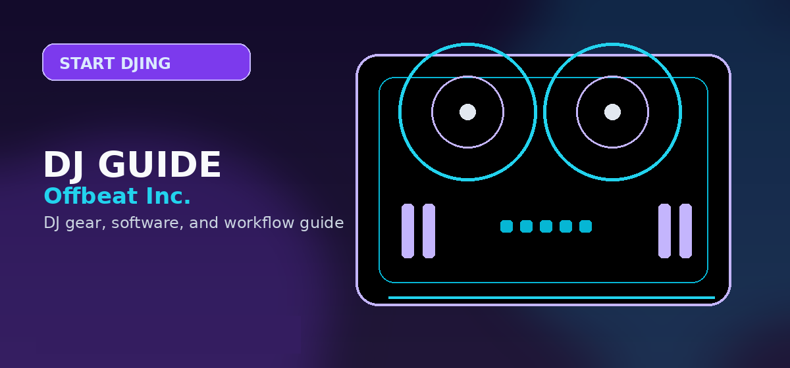

DJ Equipment Checklist for Beginners 2026: What to Buy First for Your First Setup
Comprehensive guide to DJ equipment checklist beginners 2026 what to buy first setup guide with practical recommendations and current buying notes — updated 2026.

Disclosure: This page uses affiliate links. We may earn a commission at no extra cost to you. Full disclosure →
Starting your DJ journey in 2026 is more accessible than ever, but the sheer volume of gear can be overwhelming. You don’t need a club-sized booth to sound professional; in fact, overbuying early often leads to "gear paralysis," where you spend more time tweaking knobs than actually mixing. The goal for a beginner setup is to create a streamlined, reliable ecosystem that mirrors the industry standard while remaining budget-conscious. Whether you aim to play bedroom sets, stream on Twitch, or land your first local bar gig, your priority should be tactile feel, audio clarity, and software stability. This guide cuts through the marketing noise to provide a curated checklist of the essential hardware and software you need to go from zero to your first seamless transition without wasting a dime on unnecessary fluff.
At-a-glance checklist (buy these first)
- DJ controller with built-in soundcard (2-channel is fine to start)
- Wired DJ headphones (low latency, swivelling earcup preferred)
- Laptop + DJ software (SSD + 16GB RAM is the smooth baseline)
- Monitor speakers (or practice on headphones until you can add speakers)
- Two fast USB drives (for backups and club export workflows)
- Core cables + power strip (the items that ruin gigs when forgotten)
Rule of thumb: buy the controller + headphones first, then speakers. Everything else is there to keep your setup stable and your signal clean.
Absolute minimum setup
1) DJ controller
The controller is your primary interface with your music. For 2026, the Pioneer DJ DDJ-FLX4 remains the gold standard for beginners (approx. $300). It is designed specifically for entry-level users, offering "Smart CFX" and "Smart Fader" features that help you execute professional-sounding transitions while you're still learning the ropes. Its biggest strength is its dual compatibility with Rekordbox and Serato, meaning you aren't locked into one ecosystem. If you have a larger budget and want a "forever" beginner controller, the DDJ-FLX10 (approx. $1,600) offers professional-grade jog wheels and standalone capabilities. However, for 90% of beginners, the FLX4 provides the perfect balance of size, price, and functionality to master the basics of beatmatching and EQing.
- Must-have: built-in audio interface (master + headphone outputs)
- Nice-to-have: good jog feel + dedicated EQ knobs per channel
- Avoid: “toy” controllers with tiny pitch faders (harder to learn on)
2) Wired DJ headphones
You cannot mix what you cannot hear. Avoid using consumer Bluetooth headphones; the latency will make beatmatching impossible. The industry benchmark is the Sennheiser HD 25 (approx. $180). These are rugged, foldable, and offer the high-frequency clarity needed to hear the cue track cleanly while learning beatmatching.
- Headphones: wired, loud enough to cue over speakers, comfortable clamp
- Comfort: strong enough isolation, but not painful after 60 minutes
- Durability: replaceable parts matter if you gig
3) Laptop + DJ software
Your hardware is only as good as the computer driving it. In 2026, the MacBook Air (M3 or M4 chip) with at least 16GB of RAM (approx. $1,000+) is the recommended choice for stability and portability. Windows laptops work perfectly well, provided they have an SSD and a dedicated USB-C port. Regarding software, Rekordbox is the essential choice because it is the native software for the gear used in 99% of professional clubs. Learning Rekordbox at home means your USB sticks will work instantly on club-standard CDJs. Alternatively, Serato DJ is prized for its superior scratching and sampling capabilities. Both offer "free" versions that unlock fully when you connect a compatible controller like the FLX4.
- Baseline spec: SSD + 16GB RAM + modern CPU (stable USB ports matter)
- File hygiene: keep your DJ library on one drive and back it up monthly
- Club prep: Rekordbox export workflow if you plan to play on CDJs
Nice-to-have upgrades
Once you can beatmatch and EQ reliably, upgrades make practice more realistic and your sound more accurate. The biggest quality-of-life jump is a pair of powered monitors (or decent speakers) so you can hear your mix in the room instead of only in headphones.
- Powered monitors: helps you learn bass balance and transition smoothness
- Laptop stand: better ergonomics, less spill risk
- Controller case / bag: protects knobs and faders when travelling
Cables & adapters
The most frustrating part of a first setup is realizing you're missing a $10 cable. Keep your signal path simple: controller → speakers (home) or controller → venue mixer/PA (gig). Buy a couple of spares and keep them in the same pouch so you’re never scrambling.
| Need | What to buy | Why it matters |
|---|---|---|
| Home speakers | RCA → TRS (or RCA → XLR) cable | Gets a clean, reliable connection from controller to monitors |
| Venue mixer / PA | Spare RCA + spare USB cable | Most common failure points; a backup saves your set |
| Modern laptops | Powered USB‑C hub (if you need extra ports) | Prevents disconnects from underpowered ports mid‑mix |
| Club workflow | 2× fast USB drives | Always carry a backup in case one drive fails or corrupts |
Gig/travel checklist
If you’re leaving the house with your gear, the goal is redundancy. You don’t need a huge bag — just enough backups to survive common failure points (USB, cables, power).
- 2× USB drives (same playlists on both)
- Headphones + spare 3.5mm adapter (if your model needs it)
- Spare USB cable + spare RCA cable
- Small power strip (or extension lead) + charger
- Gaffer tape (optional, but it solves a lot)
| Scenario | Bring | Why |
|---|---|---|
| House party | Controller + laptop, headphones, RCA cable, power strip | Fast setup; most speakers accept RCA/aux via adapters |
| Bar / small venue | Headphones, 2× USB, spare USB + RCA, small light, earplugs | Backups prevent show-stoppers when a cable fails |
| Club (CDJ booth) | Headphones, 2× USB, backups, laptop only if you’re using it | Most clubs provide players/mixer; you bring your library and monitoring |
| Wedding / mobile | Controller, laptop, 2× USB, spare cables, power strip, mic (if needed) | Long sets + announcements require reliable power and spares |
2026 Beginner Gear Comparison
| Component | Budget Entry-Level | Prosumer Start | Estimated Price Range |
|---|---|---|---|
| Controller | Pioneer DDJ-FLX4 | Pioneer DDJ-FLX10 | $300 – $1,600 |
| Headphones | Audio-Technica ATH-M20x | Sennheiser HD 25 | $50 – $180 |
| Speakers | PreSonus Eris 3.5 | KRK Rokit 5 | $100 – $300 |
| Laptop | Any i5/Ryzen 5 + 16GB RAM | MacBook Air M3/M4 | $600 – $1,200 |
| Software | Rekordbox (Free) | Serato DJ Pro | $0 – $250 |
Quick Verdict
For the absolute beginner who wants a reliable, industry-standard experience without breaking the bank, the "Golden Trio" for 2026 is: Pioneer DDJ-FLX4 $\rightarrow$ Sennheiser HD 25 $\rightarrow$ MacBook Air. This combination ensures that everything you learn at home translates directly to the professional booth, providing a seamless path from your bedroom to the club.
Investing in the right gear early prevents the need for expensive upgrades six months down the line. Focus on the fundamentals—the controller, the headphones, and the software—before exploring add-ons like MIDI controllers or expensive lighting rigs. Check out our curated affiliate links below to find the best current deals on these 2026 essentials and start your journey today!
Checklist bottom line: For a gig-ready setup, prioritise: (1) controller with built-in soundcard, (2) headphones, (3) laptop bag with surge protector, (4) USB backup drive. The most commonly forgotten gig item is a high-quality USB that loads fast on CDJs -- always carry two. Shop gig essentials on Amazon →
Shop on Amazon
Gear up your full DJ kit — controllers, cases, and accessories on Amazon.
Also on zZounds
Flexible financing · No credit check · 45-day price guarantee.
Pro Tips Before You Decide
- Use free trials fully — spend the entire trial period on the specific workflow you plan to use long-term, not just exploring features
- Check recent reviews — software and gear receive regular updates; look for reviews or Reddit posts from the last 3-6 months
- Budget for accessories — cables, stands, carrying cases and replacement pads/needles add 10-20% on top of the main purchase price
- Join the community early — getting active in subreddits and Discord servers before purchasing gives you direct access to current owner feedback
- Plan your setup holistically — whichever product you choose, make sure it integrates cleanly with the rest of your gear and software ecosystem
Frequently Asked Questions
What do I need to start DJing at home?
A solid beginner home setup is: a DJ controller (with built-in soundcard), a laptop with DJ software, wired headphones, and monitor speakers (optional at first if you practice on headphones).
What equipment do working DJs carry to gigs?
Most gig bags include: two USB drives, headphones, spare USB + RCA cables, a small power strip, and (if the venue doesn’t provide gear) a controller or laptop.
How much does starter DJ equipment cost?
You can start learning with a controller + headphones for a few hundred dollars. A full beginner setup with speakers and a decent laptop costs more, but you can build it in phases.
Do I need speakers to practice DJing at home?
No. You can learn core skills (beatmatching, phrasing, EQ) in headphones. Speakers help you learn how your mix translates, but they’re not required on day one.
What is a DI box and do DJs need one?
A DI box converts an unbalanced signal to balanced for long cable runs (common in larger venues). For home practice it’s usually unnecessary; for venues with long runs it can help avoid noise.